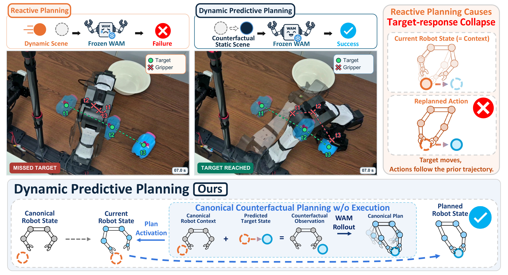
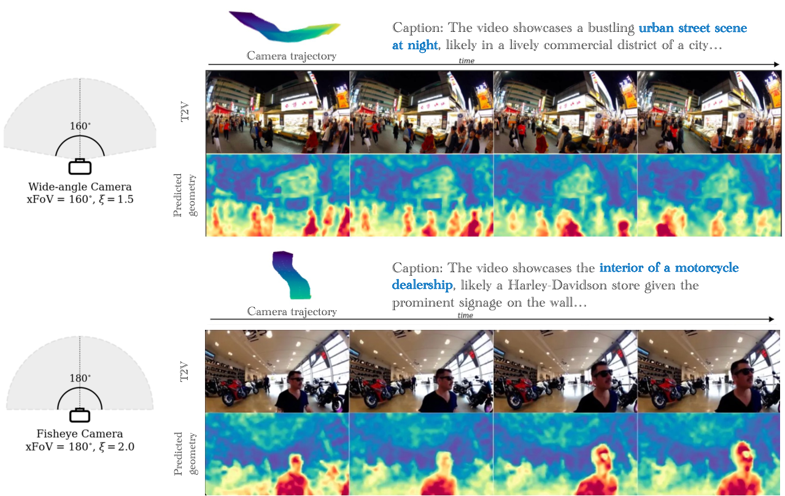
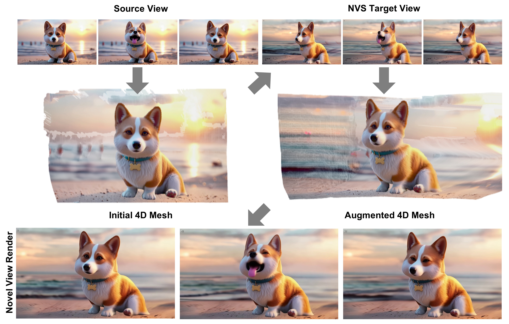

01 /ROBOT LEARNING
DPP
Dynamic Manipulation with World-Action Models via Counterfactual Planning
Planning interactions with moving objects through world action models and counterfactual observations.

View figure ↗KAIST · ROBOT LEARNING & COMPUTER VISION
I study visual intelligence and how it connects to action.
My research spans dynamic robotic manipulation with world models, camera-controlled video generation, and geometrically grounded 4D generation.
B.S. · Electrical Engineering (EE)
2015–2024
Publications & research 3 SELECTED WORKS
Dynamic Manipulation with World-Action Models via Counterfactual Planning
Planning interactions with moving objects through world action models and counterfactual observations.

View figure ↗Curved Ray Expectation Positional Encoding for Unified-Camera-Controlled Video Generation
Depth-aware ray positional encoding for video generation across camera motions and lens geometries.

View figure ↗Geometric 4D Stitching for Grounded 4D Generation
Geometrically grounded 4D stitches that complete missing scene regions and support dynamic scene expansion and editing.

View figure ↗Get in touch.
For research discussions and collaboration, feel free to email me.
sunwoo_p@kaist.ac.kr